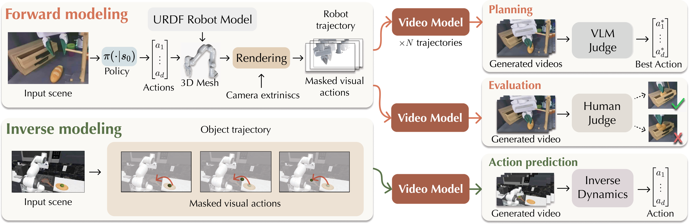
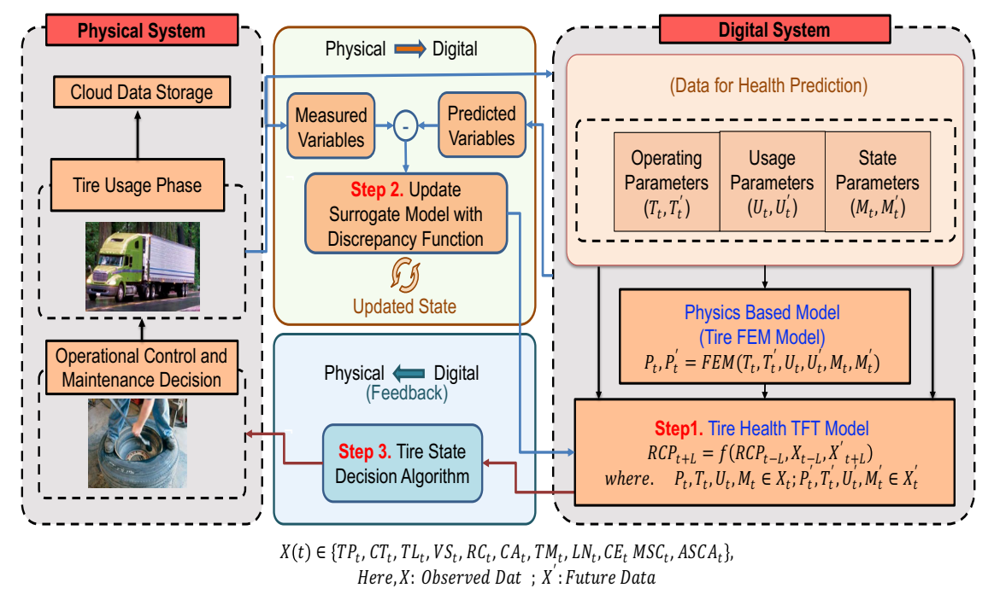
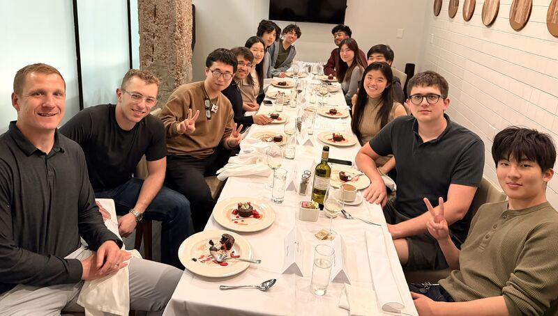
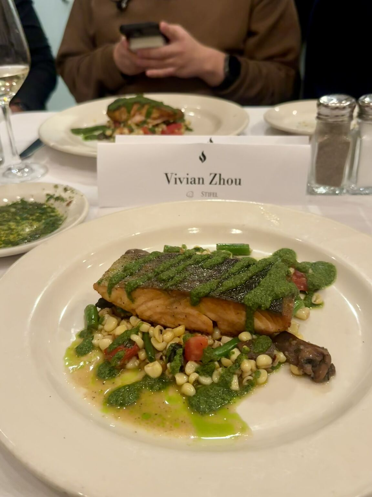
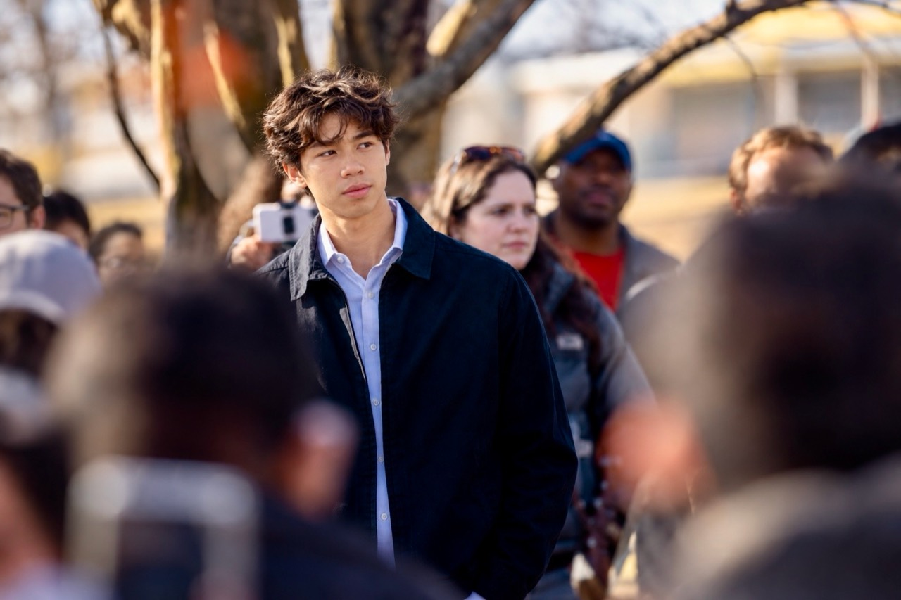

Christopher Luey
Email · LinkedIn · GitHub · X · Book a call · Jobs
Research. I've had lab affiliations at Northwestern, MIT, and Stanford, where I've been mentored by:
- Stanford: Ruohan Zhang, Fei-Fei Li, and Wensi Ai.
- MIT: Yonghyeon Lee and Sangbae Kim.
- Northwestern: Vispi Karkaria, Wei Chen, Millicent Schlafly, Ed Colgate, Todd Murphey, and Kevin Lynch.

A pixel-space control interface that expresses action as a partially revealed trajectory in a video. arXiv · Project page

We developed a digital twin that uses tire usage and performance data to forecast remaining tire health. A transformer model estimates degradation and uncertainty, while model updates and a decision algorithm help determine when tires should be replaced. The goal is safer, more efficient maintenance grounded in the condition of each tire.
Journal article · arXiv · PDF
About. I'm a technologist, researcher, and hardware engineer. I'm an AI maximalist with relentless ambition, a stubborn streak, and a willingness to go against the consensus. I spend every waking minute working on problems I care about. I trust my intuition and follow my convictions, even when that means turning down or . I've held paid engineering roles at Tesla, Astranis Space Technologies (Series D), and Innate Robotics. I've also conducted robotics research at MIT and Stanford. I've worked for, consulted for, and helped dozens of founders, including those at Build.ai, Mercor, Human Archive, Synphony, and many more. I also run a job board for friends who are hiring.
Engineering. I focus on robotics, industrials, and defense, working across mechanism design, rigid-body dynamics, CAD, FEA/CFD, precision machining, PCB design, and electromechanical integration. I enjoy low-level systems programming in Rust and C/C++—kernels, device drivers, and bare-metal firmware—and have built real-time motor-control and sensor-acquisition systems with sub-millisecond latency. My controls and autonomy work spans state estimation, SE(3) trajectory planning, Jacobian-based inverse kinematics, and closed-loop control, with validation through MuJoCo simulation, SIL/HIL testing, and propulsion hotfires. My ML work spans imitation-learning policies, generative world models, transformer-based prediction, 6D pose estimation, and CVAEs with contrastive objectives in PyTorch, connecting perception and learned representations to physical robot behavior.
Investing. I invest in robotics, industrials, and defense and scout for more than a dozen venture funds. Recent investments include Envalar, which I brought to 645 Ventures, alongside several companies still in stealth.
Dinners. I host many dinners for founders, researchers, and investors in robotics and physical intelligence, and have more than 500 coffee chats annually. Schedule a meeting—I'd love to chat!
V11 × Hanwha Asset Management & Stifel Bank — Physical Intelligence Dinner


Hackathons & pitch competitions. 66% hackathon win rate.
- $5K prize at the Inference-Time Compute Hackathon, hosted by Mercor, Etched, Cognition, and Anthropic, for Human Gym.–
- $20K grand prize at the K-Scale Labs Humanoid Robotics Hackathon.–
Rochan Kavulli and I co-founded our first business, Elytra Robotics, which was acquired. We recruited and managed 40 interns across business development, AI, hardware, and mechanical design; spoke with hundreds of customers and generated revenue; and won dozens of pitch competitions, securing five figures in non-dilutive funding. Highlights:
- 2nd out of 70 teams at UCLA's BruinTank.
- 2nd in Energy & Sustainability at Northwestern VentureCat, part of a 25-venture semifinal field.
- Won the Next Big Idea Award at Allegheny's Zingale competition, in a field of 25 teams from seven institutions.–
- Secured $3K at Wesleyan's New Venture Awards, among the final 10 from 30+ ventures.
Education. NSF Graduate Research Fellow. Stanford M.S. in Mechanical Engineering, expected June 2027. Northwestern B.S. in Mechanical Engineering, Robotics concentration, 2025.
Contact. Let's build something useful. luey@alumni.stanford.edu
